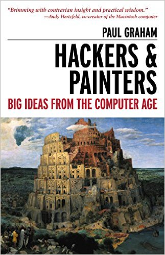

The readings for this week are:
In these essays, Paul Graham discusses the process of creating a startup and the generation of wealth in general:
Economically, you can think of a startup as a way to compress your whole working life into a few years. Instead of working at a low intensity for forty years, you work as hard as you possibly can for four. This pays especially well in technology, where you earn a premium for working fast.
For this upcoming week, you are to consider the following questions as you perform the readings and participate in class:
What do you make of Paul Graham's pitch about startups:
If you wanted to get rich, how would you do it? I think your best bet would be to start or join a startup. That's been a reliable way to get rich for hundreds of years.
Do you find the possibility of creating your company enticing or frightening? Is this something you have pursued before or wish to pursue in the future? Do you wish to retire early or work for a long time?
What do you make of Paul Graham's justification of income inequality:
Technology should increase the gap in income, but it seems to decrease other gaps. A hundred years ago, the rich led a different kind of life from ordinary people. They lived in houses full of servants, wore elaborately uncomfortable clothes, and travelled about in carriages drawn by teams of horses which themselves required their own houses and servants. Now, thanks to technology, the rich live more like the average person.
Is technological progress and possible improvement in living conditions worth a widening incoming gap? Do we "unshackle" the "wealth creators" or should we, as a society, "steal" from them?
Finally, Paul Graham made his fortune by targeting the web. What do you think is the next big technological platform? IOT? Wearables? VR? Web? Mobile? Desktop? If you had to make an application today, what would you target and why?
Note, you should not simply list the questions and answer each one directly. Instead, the questions are there to help you brainstorm about the question:
What does the success of modern hackers such as Paul Graham say about our present society and its future? Should our society and culture encourage risk taking and starting businesses? What is the next big thing?